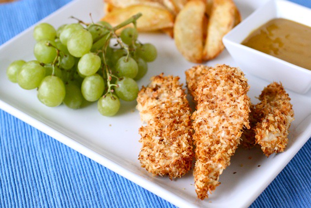

Chicken Tenders Recipe

Description
With a sweet and savory honey-Dijon coating, these chicken tenders are a breeze to make. Serve them with ranch dressing,
ketchup, or more honey-mustard dressing.
Ingredients
- ½ cup all-purpose flour, or as needed
- 3 tablespoons honey
- 3 tablespoons Dijon mustard
- ½ cup Italian-seasoned bread crumbs, or more as needed
- 1 pound chicken tenders
- ½ teaspoon salt
- ¼ teaspoon ground black pepper
- 3 tablespoons unsalted butter
Steps
- Place flour in a shallow dish. Combine honey and Dijon mustard in another shallow dish. Place bread crumbs in a third shallow dish.
-
Season chicken tenders with salt and black pepper. Dredge tenders in flour; shake off excess. Dip into honey-mustard mixture. Press into
bread crumbs to coat both sides, pressing crumbs into tenders. Place breaded tenders, unstacked, onto a plate. Repeat with remaining
tenders.
-
Melt 2 tablespoons butter in a large skillet. Add tenders; cook until golden brown, 4 to 5 minutes. Carefully flip tenders, add
remaining 1 tablespoon butter, cook until chicken is fully cooked and golden brown, 2 to 3 minutes more.
Home